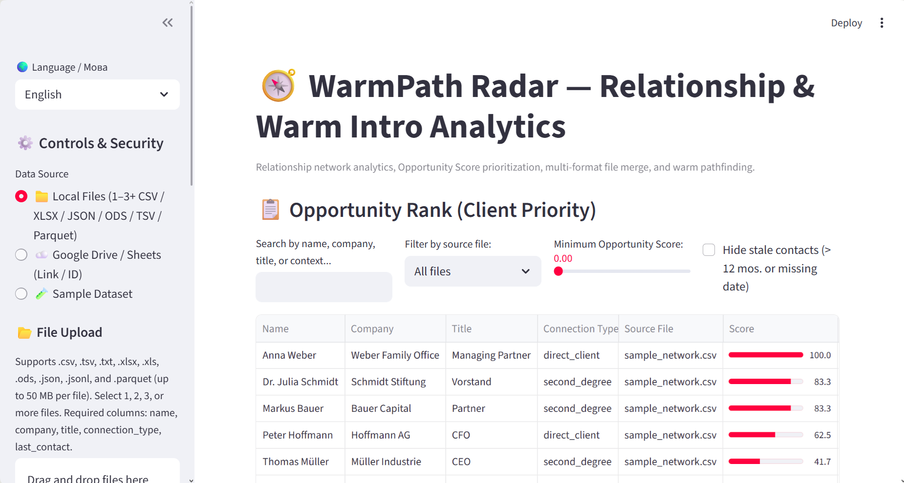
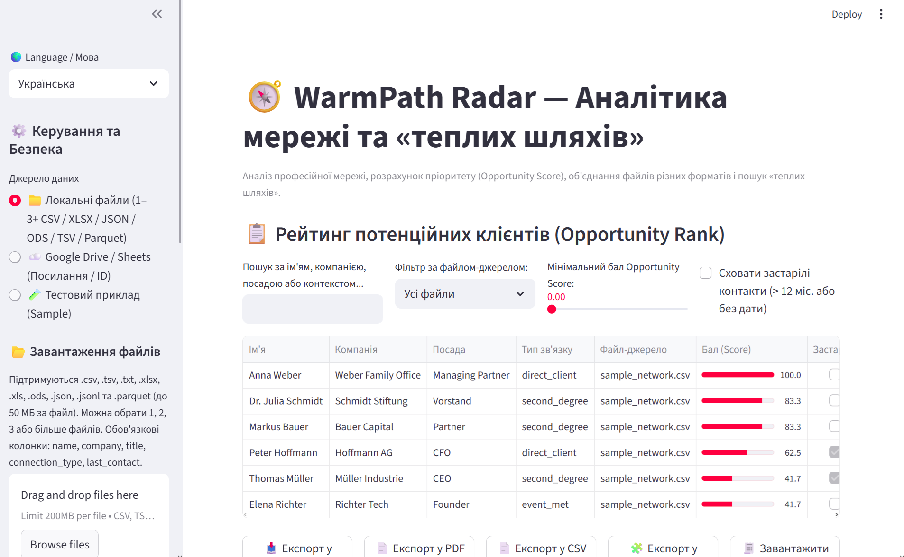
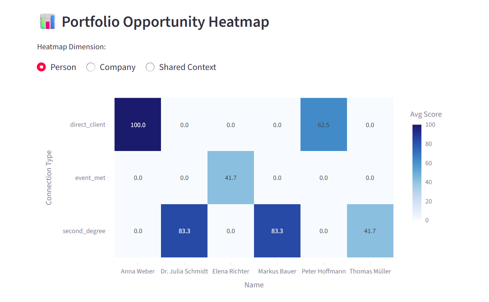
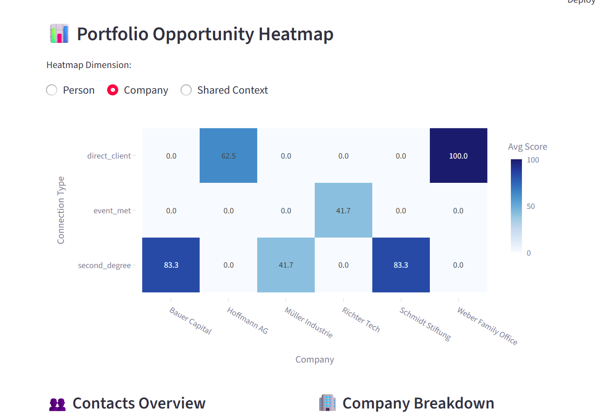
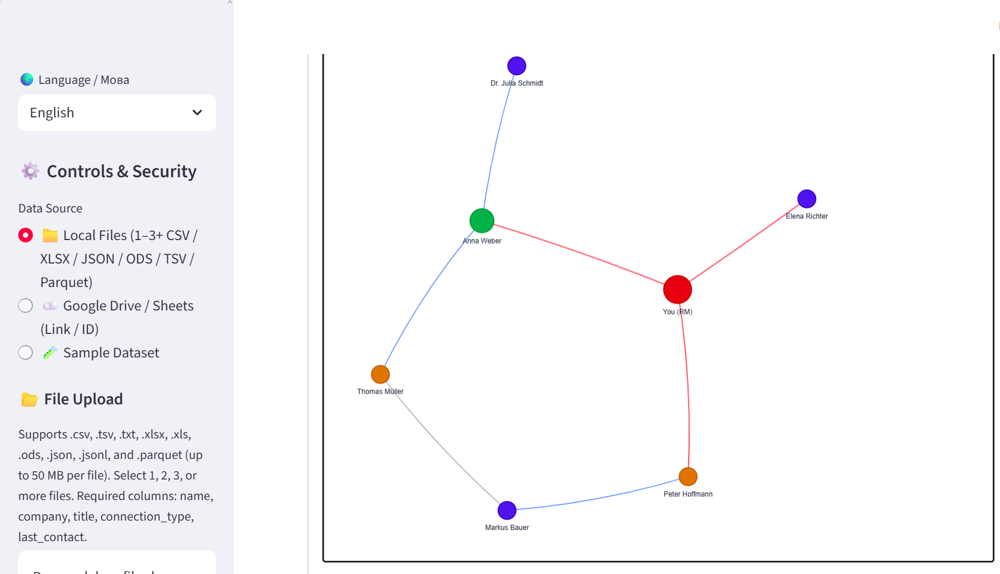
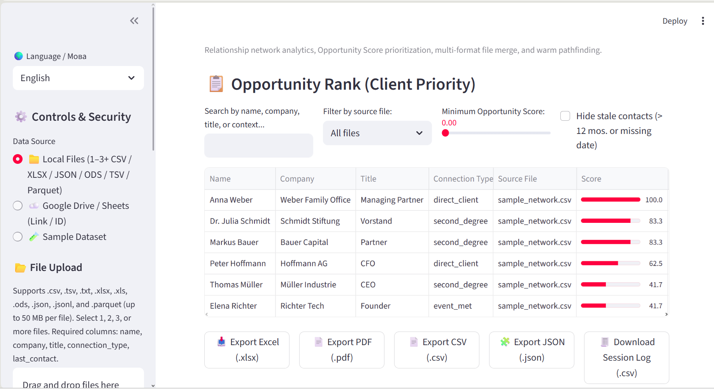

Аналітика професійної мережі, розрахунок пріоритету (Opportunity Score) та пошук «теплих шляхів» (Warm Paths). Relationship network analytics, Opportunity Score prioritization, and warm path discovery.
Головний екран аналітики в англомовній локалізації: таблиця Opportunity Rank, панель керування джерелами даних та завантаження файлів. Main analytics dashboard in English localization: Opportunity Rank table, data source controls, and file upload zone.

Україномовна версія інтерфейсу з рейтингом клієнтів (Opportunity Rank) та налаштуваннями безпеки. Ukrainian localization of the main dashboard showing Opportunity Rank and security controls.

Візуалізує середній бал Opportunity Score за типами зв'язків (direct_client, event_met, second_degree) для кожного контакту.
Visualizes average Opportunity Score by connection type (direct_client, event_met, second_degree) for each contact.

Допомагає швидко побачити, які компанії мають найсильніші точки входу та де зосереджені найвищі бали. Helps quickly identify which target companies have the strongest entry points and highest opportunity scores.

Будує мережу від RM до цільових контактів, підсвічує прямі та опосередковані зв'язки й допомагає знайти найкоротший «теплий шлях». Maps the network from RM to target contacts, highlights direct and indirect links, and surfaces the shortest warm introduction path.

Готові вивантаження у Excel (.xlsx), PDF (.pdf), CSV (.csv), JSON (.json) та окремий журнал дій сесії.
Exports to Excel (.xlsx), PDF (.pdf), CSV (.csv), JSON (.json) along with a downloadable session log.

У відкритому репозиторії розміщено лише презентацію та опис функціоналу. Безкоштовне скачування коду не передбачене. This public repository contains only the presentation and feature overview. Free source code download is not available.
Щоб отримати демонстрацію, адаптувати рішення під ваші задачі або домовитися про доступ до програми, звертайтеся напряму. For a live demo, custom adaptation to your workflow, or individual access to the application, please reach out directly.